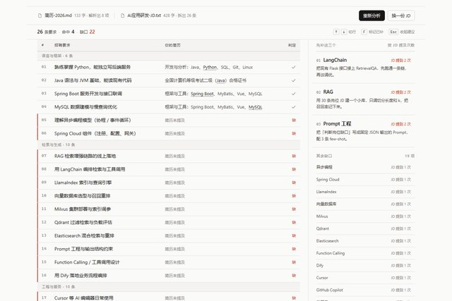
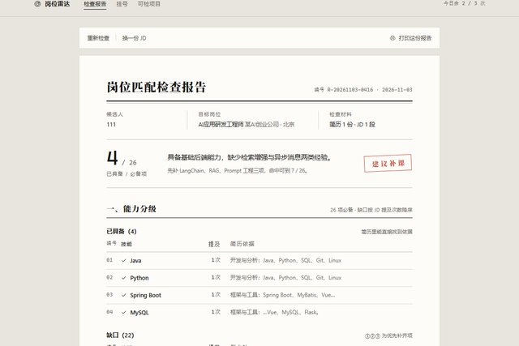
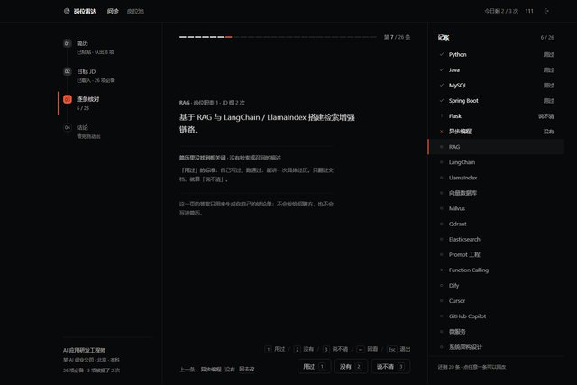

D
对照表
结果就是那张表：26 行，每行一条要求，左列 JD 原句、中列简历里的原句证据、右列判定。命中行安静，缺口行带红轨。 分析完两个大输入框折成一条材料栏，表格占满整宽。按 ↑↓ 选行、F 标记已补、Esc 收起建议。
骨架取自 GitHub diff 的逐条对照 + Geist 的细线网格

26 行 · 命中 4 · 缺口 22打开 →
第一版三个方向（A 冷静工具 / B 文档对照 / C 深色控制台）被否得有道理：它们其实是同一个骨架—— 两个大输入框 + 一排指标 + 一堆圆角胶囊，只换了颜色和字体。所以这一版先去看真正做得好的产品怎么做， 再把结构换掉：D 把结果做成一张对照表，E 做成一份体检报告，F 做成一次逐条问诊。
 Geist1px 细线本身就是版面；格子内边距 40px；标题 40px / −0.04em。
Geist1px 细线本身就是版面；格子内边距 40px；标题 40px / −0.04em。
 Stripe 文档正文 16/1.7，行宽约 40 汉字；全页没有一张卡片、一条阴影。
Stripe 文档正文 16/1.7，行宽约 40 汉字；全页没有一张卡片、一条阴影。
 Linear近黑 #08090A，界面字 13px，行高 32–36，分隔线只有 6% 白。
Linear近黑 #08090A，界面字 13px，行高 32–36，分隔线只有 6% 白。
 GitHub diff行号槽 40px；命中/缺口的整行底色与分节头，是「逐条对照」的现成语言。
GitHub diff行号槽 40px；命中/缺口的整行底色与分节头，是「逐条对照」的现成语言。
 Superhuman列表一行三行信息，1px 分隔，小号计数标签；密度高但不吵。
Superhuman列表一行三行信息，1px 分隔，小号计数标签；密度高但不吵。
共同的结论：高级感来自线、格、字距、留白比例，不来自颜色和阴影。上一版全错在这一条上。
结果就是那张表：26 行，每行一条要求，左列 JD 原句、中列简历里的原句证据、右列判定。命中行安静，缺口行带红轨。 分析完两个大输入框折成一条材料栏，表格占满整宽。按 ↑↓ 选行、F 标记已补、Esc 收起建议。

分析完变成一张 A4 纸：编号、双线抬头、结论区一枚红章、分级表、三条医嘱、签名线。能打印、能截图发给学长。 换一份 JD 就像换一张检查单。

不一次甩 22 项缺口，而是一条条问：「这条要求 Redis，你的项目用过吗？」用过 / 没有 / 说不清，按 1 2 3 答。 右侧实时记账，答完出结论。像学长在问，不像表单在审。
